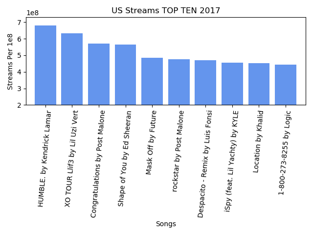
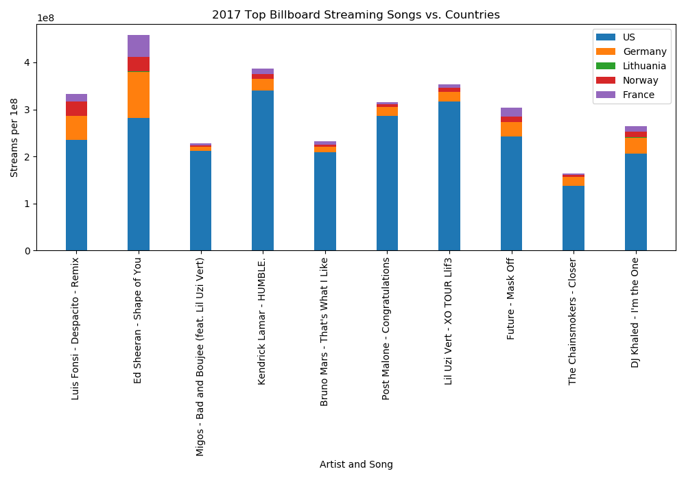

E-T-L Report
Extract
We initially believed we could use get Year to Date data utilizing the Billboard API, Apple Music API, and Spotify API.
It became apparent that some of these API's required more advanced credentials and/or were more geared toward Music Player Embedding or Customer Experience Development.
We were able to find a CSV with Spotify's top Streamed Songs across multiple years. Additionally, we utilized webscraping to pull info for a matching year from Billboard's Year-End Hot 100 Charts.
The webscraping of Billboards website was straightforward. We utilized the Requests Library and BeautifulSoup to read the HTML and parse through the data on the page.
We wrote a function to pull out the Rank Number, Artist, and Song for each entity in the charted list.
For the Spotify CSV, we read in and broke down the Spotify CSV into smalled CSV's. Afterwards, we came back in and revised the code to drop a clean version of the data into our Postgres SQL Database.
The goal is that both the CSV Data and the Webscraped Billboard Data would be in similarly stripped down forms so as to be able to make calls and reference the data (ranking, artist, track, and number of streams) more easily.
Transform
The Spofity Raw data had the following columns: Position, Track Name, Artist, Streams, URL, Date, and Region.
The Billboard webscraping data had the following columns: artist, rank, and track.
While looking at the two sources of data; Billboards webscraping and Spotify's raw data csv there are similar columns like Artist and artist, and Track Name and track.
Initially we had created a new column by using a concat function to combine and relabel a new column, "Artist_and_Track_Name." This proved to be difficult with postgres not reading out capital letter'd new column (lol).
Not only that, but there were issues with the 'track' and the 'Track Name'; Although talking about the same instance, the spellings were often different and with special characters like the apostrophe's and parantheses.
We had to keep the data super basic and less complicated so that postgres wouldn't give us any errors.
This is more in line with breaking down tables into normal forms, so we were okay with the leaving these Data sets as simple as possible.
Load
We started this project with the result of wanting to make calls from Postgres SQL in order to directly compare the top ten from Billboard with how and by region those songs rank amoung differrent countries.
For instance we wanted to see how Ed Sheerans' Shape of You, which is ranked number 2 on Billboards Streaming Top Ten of 2017, and see where it ranked amoung different countries. We were able to do this easily in pandas,
but had trouble with the tranformation of our data. With our ambition crumbling from the transfromation process, we were still able to load data that would allow us to see streamings songs per country respectively.
Conclusion
One of the primary items we could have handled differently, would be pushing through to acquire the exact data we wanted, either by used of API's or by some other avenue.
Additionally, part of the initial cleaning would be to match song titles and replace so that song titles spelling and syntax matched across all possible Data Sets. Having done this, we could have
made more complex calls directly from Postgres SQL to find the Data we needed for munging, comparison, and analysis.

